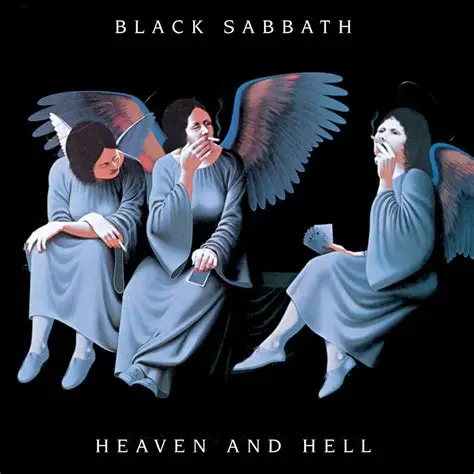

Antagligen har du hört musik. Säkert bra för den delen. Min vardag består av väldans mycket musik. Det går från Rock till Metal. Inte så mycket utanför det får jag erkänna. Runt om rutan kan du se några exempel på suveräna album. Med favoriten på vänster sida. Rising av Rainbow. Gallet bra album som gjorts av Ritchie, Carey, Bain, Powel och Dio.
